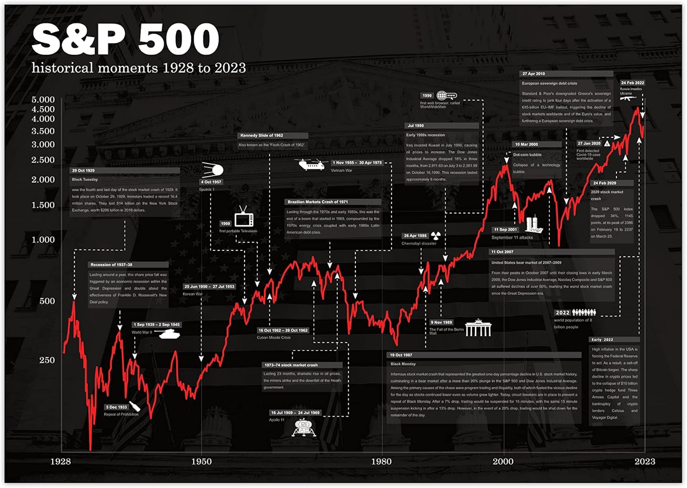
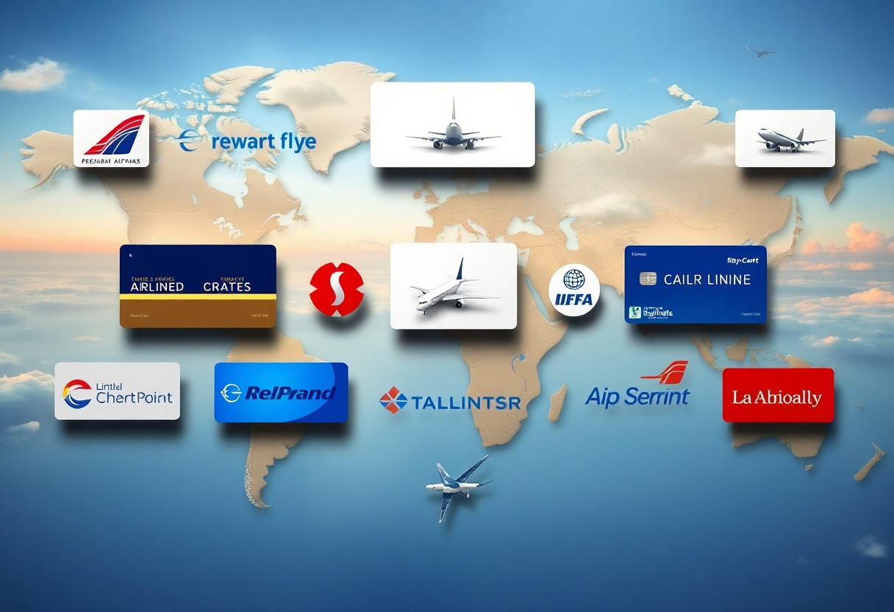

Featured Projects

AI Document Chatbot — Hybrid RAG System
Production-grade AI chatbot with hybrid BM25 sparse search + dense HuggingFace embeddings + cross-encoder re-ranking, achieving 85% context-aware accuracy on 100+ page PDFs. Features LLM-as-a-Judge evaluation framework and stateful query routing via LangGraph. Scaled to Azure-native enterprise variant using AzureChatOpenAI and Document Intelligence.

Depression Tweet Detection — LSTM NLP
End-to-end NLP pipeline on 10K+ social media posts using TF-IDF, Word2Vec, and an LSTM network — boosting classification accuracy from a 90.7% Naive Bayes baseline to 99.65% accuracy. Refactored into a modular Python package with pytest test suite and GitHub Actions CI/CD pipeline.

Wind Power Forecasting — LSTM Deep Learning
Comprehensive EDA with Time-Series Decomposition (Trend/Seasonality/Residual) on wind-power datasets. Developed LSTM (Keras/TensorFlow) and Holt-Winters models achieving 85% forecasting accuracy, validated via heatmaps, scatterplots, and ADF/ANOVA hypothesis testing. Kaggle notebook earned 33+ community votes.

Employee Attrition — PySpark MLlib
Scalable ETL and feature engineering pipeline using PySpark (Spark SQL) to process multi-feature employee tabular datasets. Applied cross-validation and hyperparameter tuning with PySpark MLlib classification models achieving 87% accuracy in identifying key attrition drivers.

Retail Analytics — RFM & Customer Segmentation
Customer segmentation using K-Means (elbow method, silhouette analysis) and DBSCAN clustering on RFM features. Identified 3 clusters where the top 40% segment generated 60% of revenue, validated with A/B testing achieving 18% higher engagement.

End-to-End Uber Trips Data Analysis
Rigorous statistical analysis (T-Tests, ANOVA, ADF) on 6 months of Uber trip data. Eliminated 25% data redundancy via Excel preprocessing; built interactive Power BI (DAX) and ggplot dashboards accelerating executive reporting by 30%. Forecasted 6-month trip demand using ARIMA, SARIMA, SARIMAX, Exponential Smoothing, and Prophet — evaluated via MAPE/RMSE.

Brunch Express — Food Delivery Backend
Production-ready Spring Boot 3.3 backend containerised with Docker and orchestrated via Kubernetes. Secured with Spring Security (JWT + RBAC), stateless data-access boundaries, and CORS policies. Features CI/CD pipeline automation, Global Exception Handling via @RestControllerAdvice, and a real-time analytics engine with Spring Data JPA tracking revenue and order transitions.

Air Quality Forecasting — TFT (PyTorch)
End-to-end multivariate time-series pipeline using PyTorch and PyTorch Lightning — integrating EDA, hyperparameter tuning via LR finder, and cross-validation to build a Temporal Fusion Transformer (TFT) forecasting PM2.5 air quality across a 365-day horizon. Achieved 40.9% SMAPE — 25% improvement over the naive baseline.

Expense Tracker — MCP Server (Agentic AI)
FastMCP expense tracking API with SQLite backend built using the Model Context Protocol (MCP) — enabling Claude AI to directly interact with financial data via structured tool calls. Handles 10+ categories with full CRUD operations, budget analytics, and MCP protocol compliance for seamless AI agent integration.

S&P 500 Return Forecasting — PyTorch LSTM & Model Benchmarking
End-to-end Azure Databricks ML pipeline with a Delta Lake feature store engineered using PySpark window functions — 15+ technical indicators, ADF/KPSS stationarity testing, STL decomposition, and cross-ticker correlation heatmaps. Designed a PyTorch LSTM with parent-child transfer learning (partial layer unfreezing, Huber loss, L2 decay) and Optuna hyperparameter optimisation. Walk-forward CV across 10 tickers with MLflow experiment tracking and backtesting against buy-and-hold benchmark.

Airline Loyalty Churn Prediction — End-to-End Azure MLOps
Production MLOps pipeline on Microsoft Azure following Medallion Architecture (Bronze → Silver → Gold Delta Lake). Engineered 15+ behavioural features with parameterised snapshot date to eliminate temporal data leakage. Trained XGBoost with SMOTE within CV folds for 12% class imbalance — achieving 0.967 ROC-AUC and 0.879 F1-score (+28.4% over logistic baseline and Azure AutoML). Componentised pipeline with automated quality gate deployed as Azure ML Batch Endpoint.
Spotify End-to-End Azure Data Engineering Pipeline
Enterprise-grade Bronze/Silver/Gold Medallion data lake using Azure Data Factory and ADLS Gen2. Engineered a parameterised CDC incremental ingestion framework with Lookup/ForEach watermark tracking. Implemented Spark Structured Streaming with Databricks Auto Loader for schema-evolving ingestion with SCD Type 1/2 dimensional modelling. Built a Jinja2-templated SQL framework for dynamic Star Schema construction in Unity Catalog — replacing hand-written SQL with config-driven query generation. Multi-environment CI/CD via Databricks Asset Bundles and Azure Logic Apps.